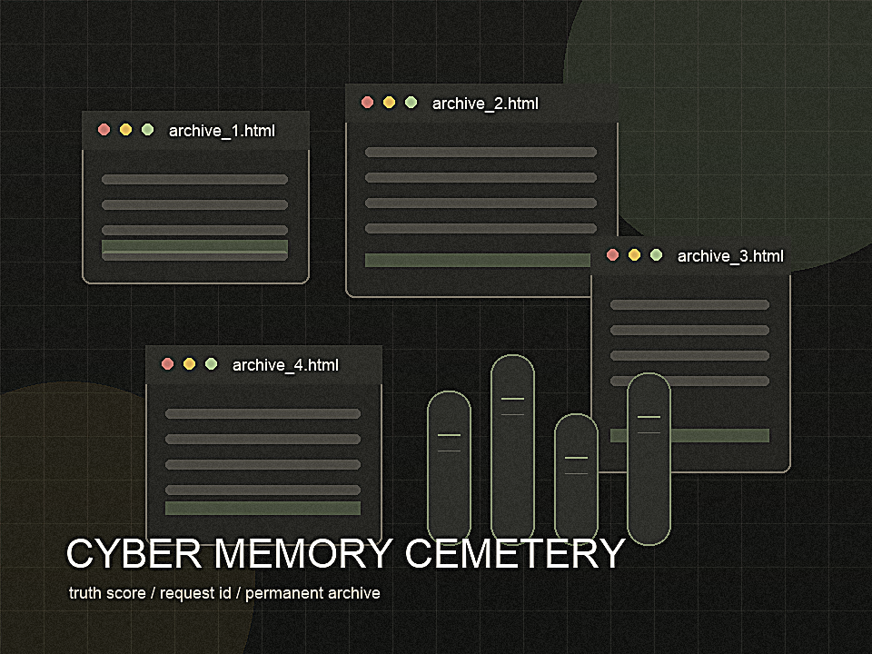

Dark Museum of Lost Web2 Communities
Cyber Memory Cemetery
赛博记忆公墓
一个由 AI Agent 策展的 Web2 数字遗产公墓。验真、立碑、纪念、封存。
Dark Museum of Lost Web2 Communities
赛博记忆公墓
一个由 AI Agent 策展的 Web2 数字遗产公墓。验真、立碑、纪念、封存。
Gonka Truth Engine for Lost Web2 Communities
Agent 搜索网页残骸，交叉验真，再生成可审计的数字墓碑。

Current Exhibit
所有文学化内容都绑定证据链。事实字段不够确定时，系统会降分并标注不确定性。
Agent Console
选择案例或输入消失网站 URL。Agent 会查询快照、整理证据并请求 Gonka 会诊。
Archive Plan
第一版让评委看到完整闭环：Gonka 验真、纪念 NFT、安葬账单、永久档案。
选择人人网或虾米音乐，让 Agent 接收一个正在消失的 Web2 社区。
Gonka 两个模型分别扮演数字考古员和真相校验员，输出 Truth Score。
生成档案哈希、纪念 NFT 和 Kite 账单，形成可付费的产品闭环。